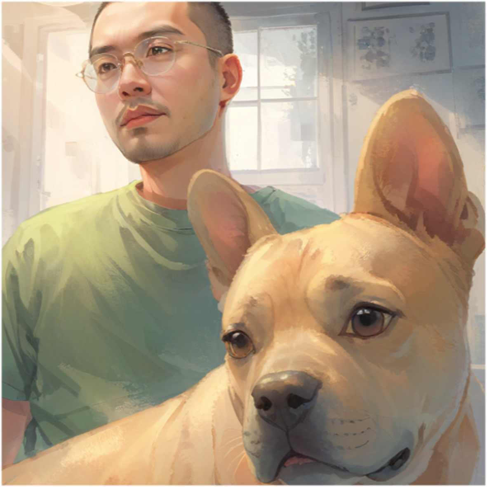

Illustration

Gender
♂️ - 男生
🕵️♂️ - 你不知道我是誰（初始蓋伏）
Goal
使用「雞」、「犬」升天讓一位研究生畢業或肄業
Ability
# 雞 -
即將發表雙色論文時，翻開角色，改為發表一篇紅 / 藍色論文在一位♀面前，並且自己發表垃圾論文。
# 犬 -
一位♂即將發表雙色論文時，覆蓋角色，改為發表一篇垃圾論文在他面前，並且自己發表紅 / 藍色論文。
## 無形の力 -
將自己一篇已發表論文，發表在一位研究生面前。
Trivia
#AIoT #PhD
Relationship